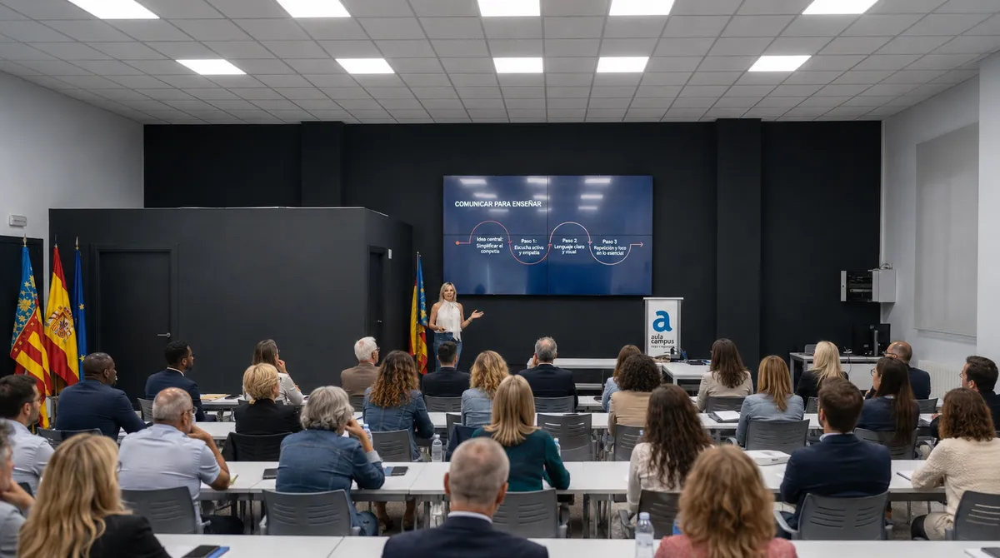

Formación Profesional para el Empleo
Acciones formativas en competencias digitales e IA aplicada dentro del sistema FPE: centros LABORA, entidades SEPE y centros concertados o acreditados.
IA aplicada a la formación y el trabajo
Formación FPE en fundamentos de IA, marketing digital, comunicación digital y transformación digital, con método, claridad y criterio pedagógico, para centros de formación, instituciones, docentes y alumnado.
El método
Enseño fundamentos de IA, herramientas y aplicaciones digitales, y las enseño con pedagogía: cada concepto y cada herramienta al servicio de una tarea real, un objetivo de aprendizaje y un criterio de uso.
El trabajo empieza antes de abrir ninguna aplicación: entender el temario, el contexto y el nivel real del grupo. Con esa base, la tecnología se convierte en práctica clara, útil y aplicable al aula, al empleo y al trabajo.
El problema no es la IA. El problema es usarla sin criterio.
Centros de formación e instituciones
¿Qué puedo impartir en tu centro?

Acciones formativas en competencias digitales e IA aplicada dentro del sistema FPE: centros LABORA, entidades SEPE y centros concertados o acreditados.
Programas para ayuntamientos, agencias de desarrollo local y entidades del tercer sector: alfabetización en IA orientada a la empleabilidad, con enfoque práctico y humano.
Capacitación de formadores: cómo integrar la IA en el diseño, la impartición y la evaluación sin perder el criterio pedagógico.
IA aplicada al trabajo
Para quien llega a través de un curso, un programa o una acción formativa: aprender a aplicar la IA al trabajo diario, sin perderse entre herramientas sueltas. Ordenar tareas, mejorar decisiones y ganar autonomía digital con práctica guiada.
Sobre mí
Docente especializada en inteligencia artificial aplicada a la empleabilidad y a la transformación digital. He impartido más de 1.000 horas de formación a más de 400 alumnos, profesionales y equipos de empresa, en centros con financiación pública y privada.
Antes de la docencia: 16 años de gestión operativa y coordinación de proyectos en el sector logístico. Sé lo que es un proceso real, un equipo real y un plazo real. Esa es la mirada que llevo al aula.
Lo que dicen
Las clases me han abierto un mundo de oportunidades tecnológicas aplicadas a la empresa que desconocía.
Me ha servido para estructurar y dibujar de forma tangible lo que en mi cabeza funcionaba pero no me atrevía a lanzar por miedo al fracaso.
Se lo comentaré a mis jefes e intentaré implementarlo en la empresa tal y como está marcado en el plan.
Muchas felicidades por el curso: ha sido una pasada. Ya estoy esperando el nivel superior.
En dos ratos has cambiado mi manera de ver la vida. Gracias por ser como eres.
Caso docente
Programa de IA aplicada impartido dentro del programa estatal Generación Digital Pymes: 7 módulos, 17 sesiones, docencia síncrona en directo. Diseño instruccional completo, tutoría diaria del alumnado y evaluación individualizada.
Contacto
La forma más rápida: reserva directamente 30 minutos en mi agenda. Si lo prefieres, escríbeme y te respondo en horario laboral.